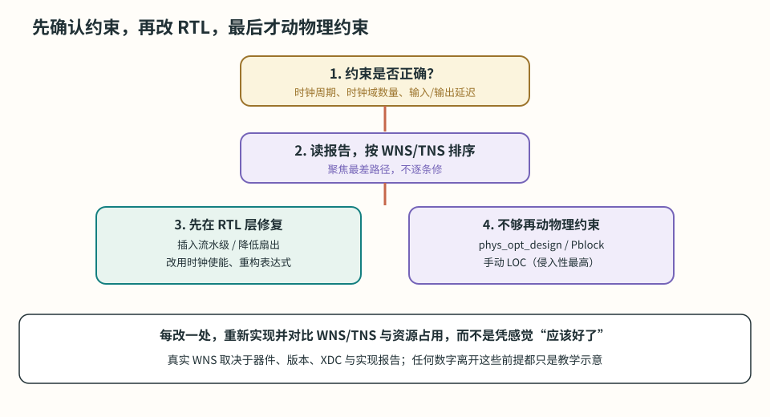

时序收敛与功耗：从报告到可验证的修改
时序违约不是玄学：每条路径都有可测量的原因。先用报告确认约束是否正确，再按侵入性从低到高选择修复手段。
01 / 时序违例从物理上来自哪里？
功能仿真通过、代码风格也没问题，实现后报告仍然给出负的 slack。这时需要的不是“感觉哪里慢”，而是把违例归到具体原因上。对 FPGA 的同步路径，违例基本只有几类来源：
| 原因 | 在报告里的表现 |
|---|---|
| 组合逻辑级数太深 | 路径的 Logic Levels 偏多，网表延时由 LUT 级联主导 |
| 高扇出网络 | 一个信号驱动大量负载，布线不得不绕远 |
| 布局分散 | 数据路径与时钟路径的净延迟占比大 |
| 约束本身写错 | 时钟周期、时钟数量、输入/输出延迟与实际不符 |
| 跨时钟域未做正确处理 | 路径跨越不相关的时钟，需要同步或约束例外 |
注意最后一行的两种可能性：真正的 CDC 需要同步器或握手，而工具报告“违例”只是因为两个时钟本就不该被比较，应用约束例外告知工具。这两种情况不能混为一谈——前者是设计问题，后者是约束问题。

02 / 从报告定位：WNS、TNS 与路径明细
时序收敛的起点是一份可信的报告。Vivado 中常用 report_timing_summary 与 report_timing -max_paths N；先确认约束是否被正确接受，再谈优化。
| 量 | 含义 |
|---|---|
| WNS | 最差一条路径的 slack（建立分析中为负表示未满足） |
| TNS | 所有违例路径 slack 之和，衡量违例总量 |
| WHS / THS | 对应的保持分析最差 slack 与总量 |
| Logic Levels | 路径上串联的逻辑级数，反映组合深度 |
| Net Delay / Logic Delay | 分别是布线延迟与逻辑延迟，占比说明瓶颈在哪 |
读路径明细时要分清两种典型形态：逻辑延迟主导说明组合级数太深，改 RTL（如插流水）最直接；净延迟主导说明布局分散或高扇出，往往需要扇出优化或物理约束。用 report_clocks 确认工具看到的时钟频率与数量是否与预期一致——这一步比任何优化都重要。
03 / 按侵入性排序的修复手段
修复手段按对设计的侵入程度从低到高排列。原则是先改 RTL，不够再动物理约束：
- 插入流水级。 把一条过深的组合路径从中间切开，用寄存器分段。代价是多一个时钟周期的延迟和一组寄存器，但通常最直接有效。
- 降低扇出 / 复制驱动。 对高扇出网络（典型如全局使能、复位）在局部复制寄存器，分散负载。
- 重构逻辑表达式。 帮助综合器减少级联深度，但不保证改善，需看报告验证。
- 物理优化（
phys_opt_design）。 在布局后复制寄存器、交换 LUT 输入、移动单元位置，不改 RTL。不同 directive 在“效果”与“运行时间”之间取舍。 - 区域约束（Pblock）与手动布局（LOC）。 侵入性最高：把逻辑限制在某个区域或指定到具体位置。区域太紧可能导致布线失败，应留余量。
// 插入流水级：把一条长组合链拆成两段寄存器
// （具体几级逻辑合适、频率能到多少，必须由实现报告决定）
reg [31:0] stage1, stage2;
always @(posedge clk) begin
stage1 <= f_part1(a, b, c); // 前半段组合运算
end
always @(posedge clk) begin
stage2 <= f_part2(stage1, d); // 后半段组合运算
end
assign result = stage2;把数据路径切成两段后，每段的组合深度下降，但模块的端到端延迟增加一拍。对于流式处理，为了保持吞吐量，往往还需要配合流水线调度（见第 12 章）。AMD 在 UG949 中给出了物理优化与视图切换的建议，具体命令行为以官方文档为准。
04 / 功耗：三个组成与可做的优化
功耗分析与时序分析一样，依赖工具报告而不是估值。Vivado 中可用 report_power 得到细分报告（前提是已有时序与开关活动信息）。FPGA 的功耗通常拆成几部分：
| 类别 | 来源 | 可影响的因 |
|---|---|---|
| 动态功耗 | 信号翻转时电容充放电 | 翻转率、负载电容、时钟频率 |
| 静态/漏电功耗 | 晶体管漏电流 | 工艺节点与器件选择、结温 |
| I/O 功耗 | 外部接口驱动与端接 | I/O 标准、驱动强度、翻转率 |
能确定性改善功耗的动作，通常是降低翻转率与减少无意义活动：让不工作的模块停止计数、避免无必要的高频信号扇出、选择合适的 I/O 标准与驱动强度。这些动作都会在 report_power 的细分里体现，可以被逐项验证。
05 / 时钟使能优于门控时钟
在 FPGA 中降低动态功耗的常见误区是“手动门控时钟”。用组合逻辑（如 AND）去开关一个时钟，会在时钟路径上引入毛刺与偏移（skew），可靠性差。FPGA 器件通常提供带使能的时钟缓冲原语，或在全局时钟资源上提供等价能力；但在大多数 RTL 设计中，更推荐的做法是用时钟使能（CE）而不是门控时钟。
// 推荐：用一个使能信号控住寄存器的更新，时钟保持连续
reg [31:0] acc;
always @(posedge clk) begin
if (module_en) acc <= acc + data_in; // 不使能时寄存器不翻转
end这样得到的效果与门控时钟类似——不工作时寄存器不翻转——但时钟网络保持完整，不引入新的时钟域，也不产生毛刺。综合器通常会把这种写法推断为寄存器的时钟使能端。AMD UG949 在“Creating Clock Enables”一节给出了相关建议。若确实需要硬件级的时钟开关（如时钟切换），应使用器件提供的专用原语，并把时钟切换方案与时序约束一起考虑。
06 / 哪些数字只是教学示意
时序与功耗是本章最容易“编数字”的地方。把边界写清楚：
- WNS/TNS、可达频率、逻辑级数、利用率——都依赖具体 FPGA part、工具版本、XDC 与实现报告，不能从一段 RTL 唯一推得。
- 本仓第 14 章的
scripts/sta_budget.py用算术演示了建立/保持预算的构成，那些数字同样是数学演示，不是某个器件的实测值。 - 功耗比例与绝对功耗依赖器件、翻转率、温度与电压，必须以工具报告为准。
因此，一份可信的时序收敛记录至少包含：器件 part、工具版本、约束文件、WNS/TNS 或 WHS/THS、主要违例路径的原因与采取的措施。缺少这些前提的“优化到了 XX MHz”没有比较意义。
思考练习：为什么“修最差的几条路径”往往能改善整体 TNS？
TNS 是所有违例路径 slack 之和。工程实践中最差的几条路径往往占据了大头；把它们改善到约束范围内，TNS 会明显下降。同时部分优化（如降低共同上游的扇出或插入流水）会连带改善一批相关路径。